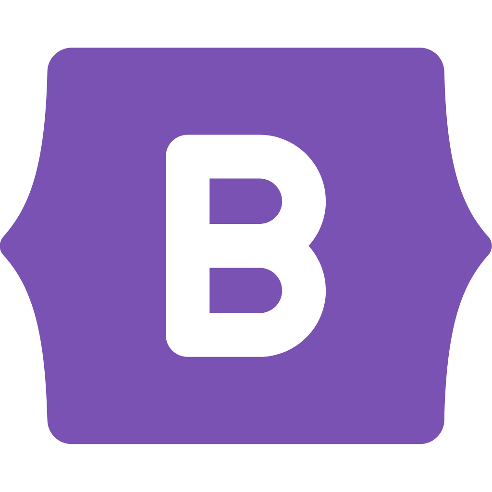
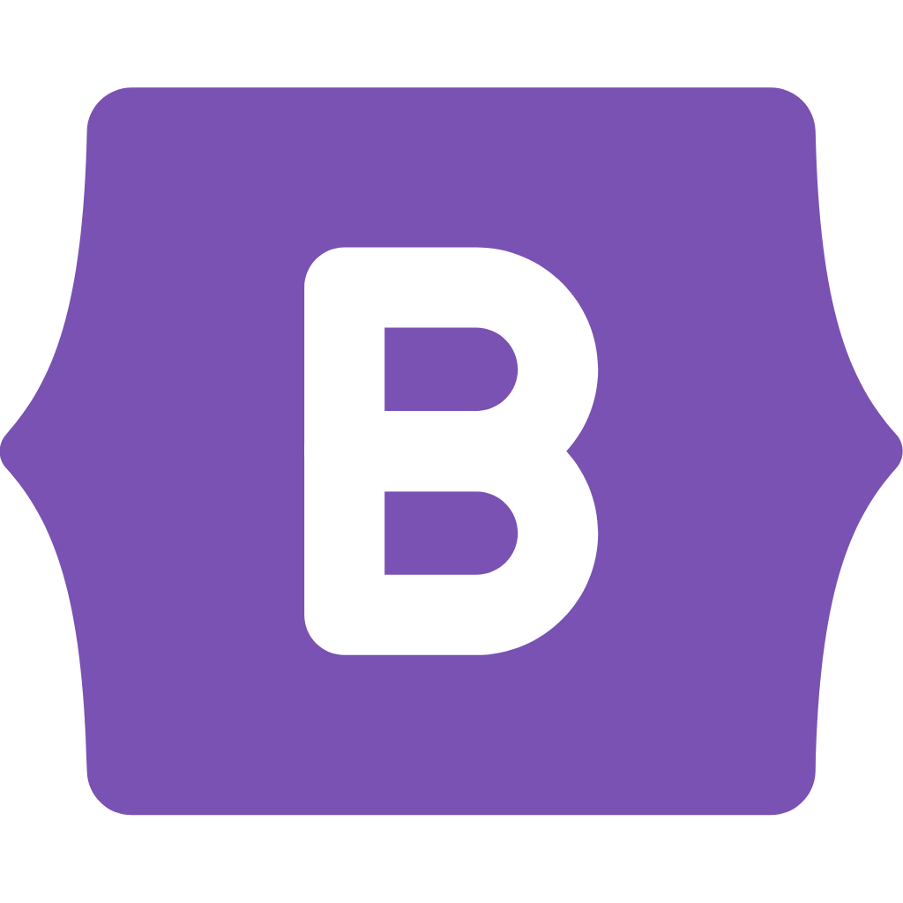

Sobre mí
Franco Luis Salvadeo
Desarrollador Front End - Estudiante de abogacía
Me caracterizo por ser una persona comprometida con mi trabajo, analítica, responsable, autónoma, con gran capacidad de adaptación y flexibilidad. Mi formación y experiencia me han dado recursos de empatía, escucha activa y trabajo en equipo.
Durante varios años me dediqué al rubro call center, donde mi actividad se desarrolló en las posiciones de representante de atención al cliente y back office. Paralelamente he cursado estudios en el área del derecho, habiendo alcanzado el cuarto año de la carrera de abogacía en la actualidad. Deseando ampliar mis conocimientos a un área que fue siempre de mi interés, el cual se despertó cuando cursé durante un tiempo la tecnicatura superior en análisis de sistemas, he decidido adentrarme en el mundo del desarrollo web y programación desde el año 2022, realizando diversos cursos con los cuales certifiqué conocimientos que ya tenía y otros recientemente adquiridos, al mismo tiempo que decidí continuar con el estudio de la tecnicatura señalada anteriormente.
Actualmente cuento con algunos proyectos personales en el rubro mencionado del desarrollo web, los cuales he emprendido con mucha satisfacción, por poder crear soluciones a desafíos y situaciones mediante la implementación de código y lógica, considerando que esto amplió mi creatividad y capacidad resolutiva. En virtud de esto, estoy en búsqueda de un empleo, dónde se me brinde la posibilidad de demostrar mi potencial en relación a estas últimas cualidades adquiridas.
Formación
- Coderhouse
- Universidad Católica de Salta
- IFTS N°16 GCBA
- Argentina Programa "Sé Programar"
- Argentina Programa "Primeros pasos del desarrollo Front End" (Ticmas)
- Edutin
- Coderhouse
- Universidad Católica de Salta
- IFTS N°16 GCBA
- Argentina Programa "Sé Programar"
- Argentina Programa "Primeros pasos del desarrollo Front End" (Ticmas)
- Edutin
Habilidades


 



Experiencia laboral
Agencia de seguros “Integrity Group” / “OIG”
Cadete administrativo
Tareas de asistencia a estructura administrativa y estructura comercial de la empresa
Call Center “Apex América S.A.”
Representante de atención al cliente telefónico y soporte técnico
Tareas de Representante de atención al cliente telefónico y soporte técnico para socios de importantes tarjetas de crédito/débito y, posteriormente, para plataforma de pagos de alcance nacional desde (junio de 2018 - septiembre de 2019). También realicé atención por otros canales como chat, formularios de contacto/e-mail y redes sociales.
Call Center “Apex América S.A.”
Back office
Tareas de Back office para dos importantes plataformas (billeteras virtuales) de alcance nacional. Generación y seguimiento de incidentes BMC, gestión de reclamos CRM tomados por el sector de operadores telefónicos, organización y coordinación como parte de equipo de trabajo, redacción y transmisión de resoluciones a los usuarios de la plataforma, solución ante situaciones generales y particulares, relevamientos y producción de informes a pedido (octubre 2019 - septiembre 2022).